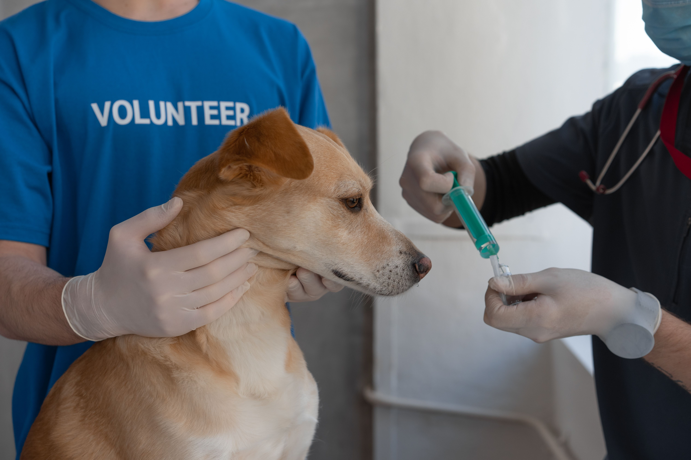

Prevenção
Ajuda a proteger seu pet contra doenças infecciosas e faz parte dos cuidados preventivos.
Ajuda a proteger seu pet contra doenças infecciosas e faz parte dos cuidados preventivos.
A vacinação contribui para a saúde e o bem-estar dos animais domésticos.
Consulte o médico-veterinário para manter o calendário vacinal adequado ao seu pet.
A vacinação é essencial para proteger cães e gatos contra doenças infecciosas. Cada animal precisa de um calendário vacinal adequado à sua idade, saúde e estilo de vida. Consulte um médico-veterinário para saber quais vacinas são recomendadas e quando devem ser aplicadas.

As vacinas ajudam a proteger os cães contra doenças como cinomose, parvovirose e raiva. O protocolo deve ser definido pelo médico-veterinário, considerando a idade e o histórico de vacinação.
A vacinação pode proteger os gatos contra doenças como panleucopenia, calicivirose e rinotraqueíte. O veterinário indicará as vacinas adequadas conforme os riscos e as necessidades de cada animal.
A raiva é uma doença grave que pode afetar animais e seres humanos. Mantenha a vacinação antirrábica em dia, seguindo as orientações veterinárias e as campanhas locais.